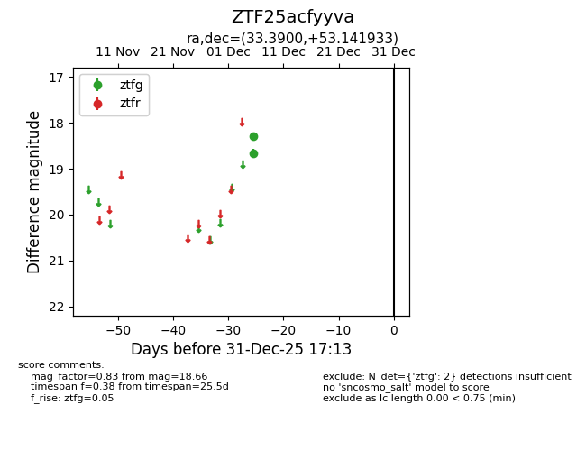
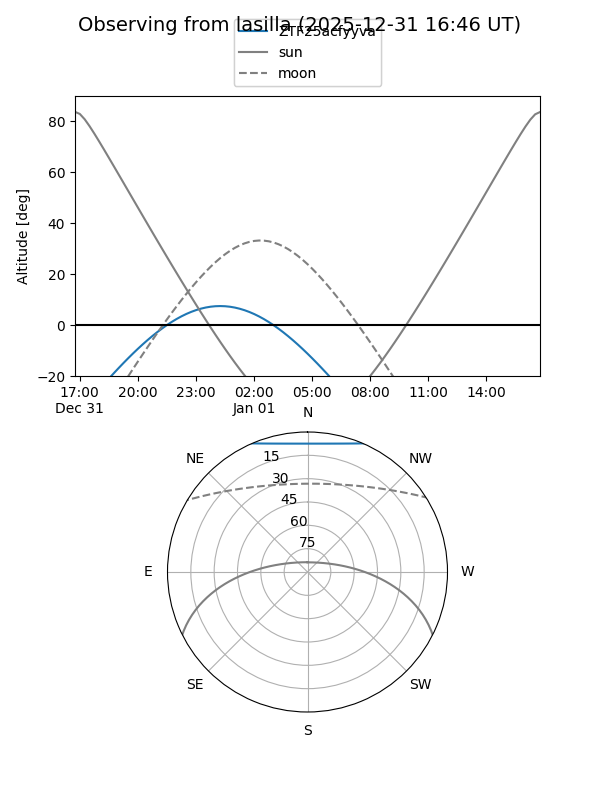

ZTF25acfyyva
Target ZTF25acfyyva at 2025-12-31 18:00
Aliases and brokers:
FINK: link
Lasair: link
ALeRCE: link
alt names
ZTF25acfyyva (ztf,fink_ztf)
Coordinates:
equatorial (ra, dec) = 33.3900,+53.14193
equatorial (HMS+DMS) = 02:13:33.59,+53:08:30.96
galactic (l, b) = (135.1898,-7.76414)
Flags:
Photometry:
last ztfg=18.66
2 ztfg detections
Lightcurve

Visibility


Additional plots